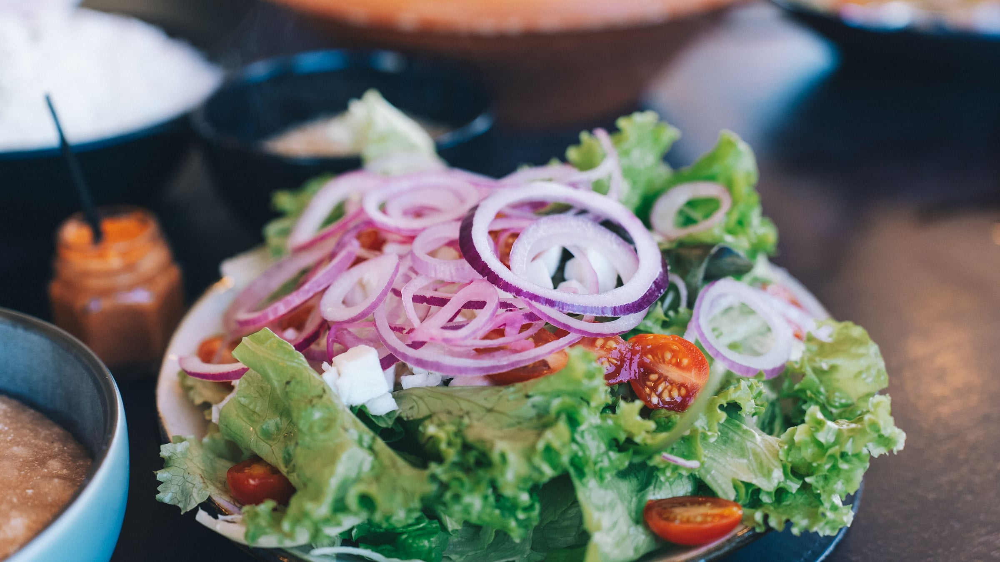
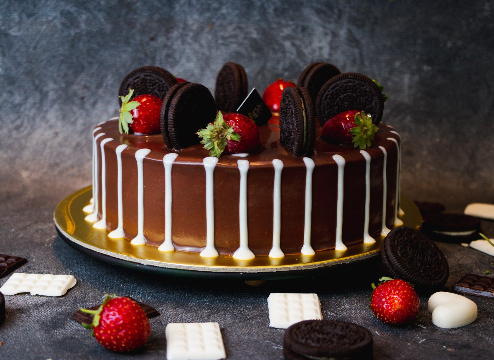

Prepare the fruit
Wash the berries thoroughly and slice the banana into even bite-sized pieces.
A colorful breakfast bowl layered with creamy yogurt, fresh fruit, oats and crunchy toppings for a quick and refreshing start to the day.

Wash the berries thoroughly and slice the banana into even bite-sized pieces.
Spoon the yogurt into a clean serving bowl and spread it evenly to create the base of the breakfast bowl.
Arrange the banana slices and fresh berries over the yogurt.
Sprinkle the rolled oats and granola across the bowl for extra texture.
Finish with chopped nuts and chia seeds, distributing them evenly across the bowl.
Drizzle a small amount of honey over the top and serve immediately while the ingredients are fresh.
Add granola and nuts immediately before serving so they stay crisp instead of absorbing moisture from the yogurt and fruit.
 Breakfast
Breakfast

Healthy
Dessert